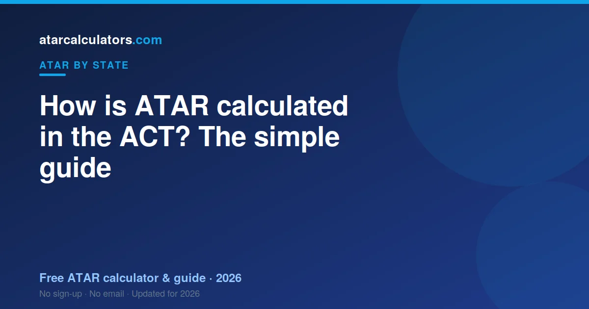

In the ACT, your ATAR is built from your college course scores. These are scaled fairly between colleges using the AST, the ACT Scaling Test. Your best three scaled scores, plus 0.6 of your fourth, form an aggregate out of 360. UAC then ranks that aggregate against other ACT students your age and turns it into an ATAR between 0.00 and 99.95. The BSSS runs your certificate, and UAC works out the ATAR.
Key takeaways
- Your ATAR is a rank from 0.00 to 99.95. It is not an average of your marks.
- It comes from your best three scaled scores plus 0.6 of a fourth.
- Together these form an aggregate out of 360.
- The AST (ACT Scaling Test) scales scores fairly between colleges.
- The BSSS runs your certificate. UAC works out your ATAR.
- The same ATAR is used by universities across Australia.

An ATAR is a rank, not a mark
Your ATAR is a rank. It shows where you sit compared to other students your age in the ACT. It is not the average of your marks.
Think of it as a line-up. Every student your age stands in a line, from lowest to highest. Your ATAR shows your spot in that line. An ATAR of 90.00 means you are near the top, ahead of about 90% of your age group.
The scale runs from 0.00 to 99.95, in steps of 0.05. The lowest number normally reported is 30.00. Anything under that shows as ‘less than 30’.
Because it is a rank, two students with the same marks can still land in different spots. Scaling and subject choice both play a part. You can try our ACT ATAR calculator to see an estimate for your own subjects.
Your ACT certificate and how you qualify
In the ACT, you earn the ACT Senior Secondary Certificate. The BSSS, the Board of Senior Secondary Studies, runs it.
Your college teaches your courses and marks your assessments across Years 11 and 12. This is called college-based assessment. It is a key part of how the ACT works.
The certificate and your ATAR are not the same thing. You can earn your certificate without an ATAR. But to get an ATAR, you need to study enough tertiary courses and sit the AST.
How your aggregate is built
The number behind your ATAR is your aggregate score. It is built from your scaled course scores.
Here is the process in plain steps. First, your college marks your courses. Next, those scores are scaled fairly between colleges using the AST. Then your best three scaled scores are taken. Finally, 0.6 of your fourth best score is added.
- Each of your best three scaled course scores can reach up to 100.
- So your best three add up to a maximum of 300.
- Adding 0.6 of your fourth score gives a maximum aggregate of 360.
A higher aggregate means a higher ATAR. UAC ranks your aggregate against other ACT students your age to work out your ATAR. You do not need the exact maths. More scaled points simply move you up the rank.
A simple worked example
Let us walk through a made-up student. Call him Leo. Leo studies four main tertiary courses.
After scaling, his four scores are 85, 80, 78 and 70. His best three are 85, 80 and 78, which add to 243. Then 0.6 of his fourth score, the 70, adds another 42.
So his aggregate is 243 plus 42, which is 285. UAC then ranks that aggregate against other ACT students to find his ATAR.
Notice how his fourth subject still counted, but only at 0.6. And his best three carried full weight. This is why doing well across several subjects matters so much.
The AST and how scaling works
The AST is the ACT Scaling Test. Nearly all ATAR students sit it. It plays a special role in the ACT system.
Colleges mark their own students, so a score at one college needs to mean the same as at another. The AST helps make that fair. It is used to scale and moderate scores between colleges.
The AST does not replace your course marks. It is a tool that keeps scaling fair across the whole ACT. So strong college results and a solid AST both help your final scores.
You can read more about how subjects scale in our best scaling subjects guide.
Who does what: BSSS, UAC and your college
Three groups play a part in your ATAR. It helps to know who does what.
The BSSS runs your certificate and sets the course framework. Your college teaches your courses and marks your assessments. The AST provides the scaling backbone.
UAC, the Universities Admissions Centre, then works out your ATAR from your aggregate. UAC also manages university applications. For a full breakdown, see our guide to BSSS, the AST and UAC.
Courses and prerequisites you need
Your ATAR gets you considered for university. But many courses also ask for specific subjects, called prerequisites.
For example, an engineering degree often needs a maths course, and sometimes physics. A science degree may need chemistry. If you skip a prerequisite, a high ATAR may still not be enough for that course.
So plan backwards from the course you want. Check its prerequisites now, while you can still choose courses. Canberra students often consider ANU and the University of Canberra, as well as universities interstate.
Bonus points and adjustment
Your ATAR is not always the final number a university uses. Many universities add adjustment points, sometimes called bonus points.
These points lift your selection rank, which sits on top of your ATAR. You might earn them for certain subjects, for where you live, or for other eligible reasons.
So a course with a cutoff of 85 might still be reachable with an ATAR just under 85, once adjustments apply. Our selection rank calculator shows how the numbers change.
Is an ACT ATAR used interstate?
Yes. The ATAR is one national rank. An ACT ATAR is read the same way as an ATAR from any other state.
Because the ACT uses UAC, applying to universities in NSW and beyond is common and simple. Students from other states can also use their ATAR to apply in the ACT. The rank travels with you.
Common mistakes students make
A few simple mistakes cost students marks every year. Here are the ones to avoid.
- Ignoring the AST. It shapes scaling for everyone, so prepare for it.
- Picking subjects only for scaling. If you are not strong in a subject, a good scaling year will not save you.
- Neglecting your best three. These carry full weight in your aggregate.
- Forgetting prerequisites. A high ATAR is wasted if you skipped a required subject.
None of these are hard to avoid. They just need a little planning early in senior college.
What happens on results day
Your ACT results and your ATAR come out in December. The BSSS releases your certificate results. UAC releases your ATAR.
After that, university offers arrive in rounds, starting in December and January. If you do not get your first choice straight away, later rounds still run for courses with places left.
For the exact dates each year, see our ACT ATAR release date guide, and always confirm on the UAC and BSSS sites close to the time.
Estimate your ACT ATAR
The best way to understand all this is to try it with your own numbers. Our free ACT ATAR calculator lets you enter your scores. It then shows an estimated ATAR using the same aggregate structure.
No estimate can be exact before results day. Scaling depends on the whole group and the AST, and that is only known after the tests. So treat any estimate as a guide, not a promise.
Still, an early estimate is useful. It shows you if you are on track for your goal. If there is a gap, you have time to act on it.
Tertiary and accredited courses
Not every course counts towards your ATAR in the same way. In the ACT, tertiary, or T, courses are designed to contribute to your ATAR, while accredited courses serve other goals. So it is your T courses that build your tertiary entrance result.
When planning for a strong ATAR, make sure your program includes enough T courses. Lower-level courses have their place in your certificate, but they do not feed your ATAR in the same way, so your tertiary course choices are the ones that matter for university entrance.
Studying Years 11 and 12 in the ACT
In the ACT, many students complete their senior secondary years at a dedicated college. Wherever you study, what matters for your ATAR is the tertiary courses you take, how you rank in them, and your performance on the ACT Scaling Test.
Your college sets and marks your assessment, and the AST aligns different colleges onto a common standard through moderation. So the setting varies, but the pathway to an ATAR, strong tertiary results plus a solid AST, is the same for every ACT student seeking a tertiary place.
Why there are no external subject exams
Unlike some states, the ACT has no territory-wide external exams in each subject. Your school-based assessment is the basis of your course scores, and the ACT Scaling Test does the job of aligning schools that external exams do elsewhere.
This has a practical consequence: consistent performance across the whole year matters a great deal, because there is no single external exam to rescue a weak run. Every assessment contributes, so steady effort throughout the year is what builds a strong result.
A simple way to check your ATAR
Rather than work through the scaling by hand, you can get a sense of where you stand from your course results, keeping in mind that ACT scaling depends on the AST. Any estimate is indicative rather than exact, because the AST moderation is applied after the test.
Still, a rough estimate helps you plan. Knowing roughly where you stand lets you focus your effort on your best courses and your AST preparation, and see how lifting a course might change your result.
Common questions
How is the ATAR calculated in the ACT?
Your college course scores are scaled fairly between colleges using the AST. Your best three scaled scores, plus 0.6 of your fourth, form an aggregate out of 360. UAC then ranks that aggregate against other ACT students to produce your ATAR.
Who calculates the ACT ATAR?
UAC, the Universities Admissions Centre, calculates the ACT ATAR from your aggregate. The BSSS runs your ACT Senior Secondary Certificate, and your college marks your assessments.
What is the AST?
The AST is the ACT Scaling Test. Nearly all ATAR students sit it. It is used to scale and moderate scores fairly between different colleges, so a score at one college means the same as at another.
How is the ACT aggregate worked out?
Your aggregate is your best three scaled course scores, plus 0.6 of your fourth. Each of the top three can reach 100, so the maximum aggregate is 360. UAC converts your aggregate into an ATAR.
Does the BSSS calculate my ATAR?
No. The BSSS runs your ACT Senior Secondary Certificate and the course framework. UAC calculates your ATAR from your aggregate. It helps to keep the two roles separate.
What is the highest ACT ATAR?
The highest ATAR is 99.95, which matches the top of the rank. ATARs run down to 30.00, and results below that are reported as 'less than 30'.
Can ACT students apply to NSW universities?
Yes, easily. The ACT uses UAC, the same centre used in NSW, so applying to NSW universities is common and simple. Your ACT ATAR is a national rank, so you can apply anywhere in Australia.
Can I estimate my ATAR before results?
Yes. A calculator can give you an estimate from your expected scores. It cannot be exact, because scaling depends on the whole cohort and the AST, but it is a useful guide for planning.